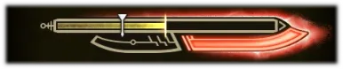

슬래시 액스는 도끼와 검의 두 형태를 자유롭게 전환하며 싸우는 하이브리드 무기입니다.
도끼 형태에서는 리치와 기동성을, 검 형태에서는 속성 해방을 활용한 폭발적인 공격력을 제공합니다.
전환 타이밍과 게이지 관리가 핵심이며, 스타일리시하면서도 강한 타격을 원하는 플레이어에게 추천됩니다.

슬래시 액스
특성 요약
| 무기 | 상쇄 | 가드 | 전용자원 | 난이도 |
|---|---|---|---|---|
| 슬래시 액스 | ✅ | ❌ | ✅ | 3 |
-
검모드 <--> 도끼 모드

도끼 모드 공격으로 슬래시게이지를 충전할 수 있으며 검 모드 공격으로 슬래시게이지를 소비하며 강력한 공격을 할 수 있다.
-
슬래시게이지
도끼:강화 내려치기, 기습 공격, 상쇄 후 도끼 모드 추격타, 집중약점공격의 도끼 피니시 공격 등을 적중시키면 도끼 강화 상태에 돌입한다.
이 상태에서는 도끼 모드의 기초 공격력이 +10 상승하고, 도끼 모드 공격에 의한 슬래시게이지 축적량을 20% 가량 증가시켜준다.
기본 상태에서 45초 유지되며 스킬 강화지속 Lv.3일 경우 90초간 지속된다. 버프 지속 중 갱신이 가능하다. -
도끼 강화 상태
도끼:강화 내려치기, 기습 공격, 상쇄 후 도끼 모드 추격타, 집중약점공격의 도끼 피니시 공격 등을 적중시키면 도끼 강화 상태에 돌입한다.
이 상태에서는 도끼 모드의 기초 공격력이 +10 상승하고, 도끼 모드 공격에 의한 슬래시게이지 축적량을 20% 가량 증가시켜준다.
기본 상태에서 45초 유지되며 스킬 강화지속 Lv.3일 경우 90초간 지속된다. 버프 지속 중 갱신이 가능하다. -
각성 게이지
검 모드 공격을 통해 충전되는 게이지. 게이지가 최대치가 되면 고출력 상태로 진입하게 된다.
검:비천연격의 충전량이 높기 때문에 가능한 이 모션을 많이 적중시켜 빨리 고출력에 진입하는 것이 슬래시액스의 최우선 과제가 된다.
슬래시게이지를 소진해 검 모드 공격이 불가능하더라도 검 모드 집중약점공격을 통해 게이지를 충전할 수 있다.
검:카운터 베어올리기의 경우 카운터에 성공하면 사용한 슬래시게이지를 돌려주기 때문에 슬래시게이지 소모없이 각성 게이지를 충전할 수 있다. -
각성 게이지
검 모드 공격에 병 효과를 가진 추가 폭발이 발생하게 되어 기본적인 검 모드 공격의 위력이 상승한다.
속성해방 찌르기 모션의 버튼을 길게 누를 경우 영거리해방찌르기를 사용할 수 있게 되며, 압축해방베기 모션의 버튼을 길게 눌러 풀 릴리스 슬래시를 사용할 수 있게 된다.
45초간 유지되며 스킬 강화지속 Lv.3일 경우 90초 지속된다. 갱신이 불가능하므로 꺼진 뒤 다시 고출력 상태로 진입하는 예열과정이 필수적이다.
| 버튼 역할(도끼 모드) | 조작 | 설명 |
|---|---|---|
| 도끼: 세로베기 | Y |
도끼: 세로베기 후 Y로 도끼: 가로베기로 파생됩니다. 도끼: 가로베기 후 Y로 도끼: 나선충전베기로 파생되며, 이때 슬래시게이지 회복량이 많습니다. LS 상 + Y로 중거리 앞을 공격하는 도끼: 돌진베기도 사용할 수 있습니다. |
| 도끼: 휘두르기 | B |
B 연타로 도끼: 휘두르기를 지속할 수 있습니다. 도끼: 휘두르기를 두 번 이상 사용한 후 Y로 도끼: 강화 내려치기로 파생되어 도끼 강화 상태로 전환됩니다. LS 상 + B로 도끼: 돌진 세로베기도 가능합니다. |
| 도끼: 상쇄 베어올리기 | Y + B |
상쇄 효과가 있는 베어올리기 공격입니다. 상쇄 대성공 시 Y로 도끼: 추격 강화 내려치기로, RT로 도끼: 추격 변형베기로 각각 파생됩니다. 도끼 강화 또는 검 모드 전환이 가능합니다. |
| 도끼: 베어내리기 | 콤보 중 LS 하 + B | 뒤로 이동하며 높은 곳을 공격하는 동작입니다. |
| 변형 | RT |
슬래시게이지가 30% 이상일 때 검 모드로 변형이 가능합니다. LS + RT로 도끼: 변형베기를 사용할 수 있습니다. 게이지가 부족할 때는 리로드가 실행됩니다. |
| 집중 변형 연참 | LT 길게 + RB |
상처에 효과적인 비스듬히 베기 공격입니다. 상처에 적중하면 여러 번 연속 공격하여 도끼 강화 피니시를 발동할 수 있습니다. 연속 공격 중 RT로 검 모드로 변형하며 속성해방 피니시를 발동할 수 있습니다. |
| 버튼 역할(검 모드) | 조작 | 설명 |
|---|---|---|
| 검: 세로베기 | Y |
검: 세로베기 후 Y로 검: 우 베어올리기, 우 베어올리기 후 Y로 검: 좌 베어올리기로 파생됩니다. 파생 중 LS로 위치를 조정하면서 공격할 수 있습니다. |
| 검: 2연 베기 | B |
검: 2연 베기 후 B로 검: 비천연격으로 파생됩니다. 각성 게이지를 많이 모을 수 있습니다. |
| 검: 카운터 베어올리기 | RT + Y |
몬스터의 공격에 맞춰 사용하면 몸이 움츠러들거나 날아가지 않습니다. 성공하면 2연격이 되고, B로 검: 비천연격으로 파생할 수 있습니다. |
| 속성해방 찌르기 | Y + B |
속성해방 찌르기 후 Y 연타로 속성해방 찌르기 피니시를 발동할 수 있습니다. 피니시 후 도끼 모드로 변형됩니다. |
| 영거리 해방 찌르기 | Y 길게 + B 길게 |
고출력 상태에서만 몬스터에 달라붙어 속성해방 찌르기가 가능합니다. 달라붙은 후 Y 연타로 영거리해방찌르기 피니시를 할 수 있으며, 피니시 후 도끼 모드로 변형합니다. |
| 압축해방베기 | RT + Y + B |
검 모드의 강력한 공격입니다. 고출력 상태일 경우 추가로 폭발 공격이 발생하며, 공격 후 도끼 모드로 변형합니다. |
| 풀 릴리스 슬래시 | RT 길게 + Y + B |
고출력 상태에서만 할 수 있는 강력한 공격입니다. 속성해방 찌르기 후 RT로도 파생할 수 있으며, 공격 후 도끼 모드로 변형합니다. |
| 변형 | RT |
도끼 모드로 변형할 수 있습니다. LS + RT로 검: 변형베기를 발동할 수 있습니다. |
| 집중 변형 연참 | LT + RB |
상처에 효과적인 비스듬히 베기 공격입니다. 상처에 맞으면 여러 번 연속 공격해 속성해방 피니시를 발동할 수 있습니다. 연속 공격 중 RT로 도끼 모드로 변형하며 도끼 강화 피니시를 발동합니다. |
나선 충전베기
Y
Y
Y
슬래시 게이지 회복
사실상 슬래시 게이지를 유의미하게 회복시켜주는 핵심 기술입니다.
슬래시 게이지 부족시 검모드가 자동으로 풀리며 일정량 이상 회복 전까지는 다시 전환하지 못합니다.

검 카운터
RT
+
Y
B
비천어격 연계
검 카운터 이후 비천어격을 연계해 각성 게이지를 많이 채우는 콤보입니다.
풀 릴리즈
LT
+
Y
슬래시 액스의 모든것
슬래시 액스의 핵심 스킬로 어떻게든 풀 릴리즈를 최대한 많이 밖을지를 생각해야 합니다.
차지 이후 공격 과정에서는 슈퍼아머를 받으므로 차지해도 되는 틈을 잘 찾아야 합니다.
이후 나선 충전베기로 바로 연계하여 슬래시 게이지를 대량 회복 할 수 있습니다.